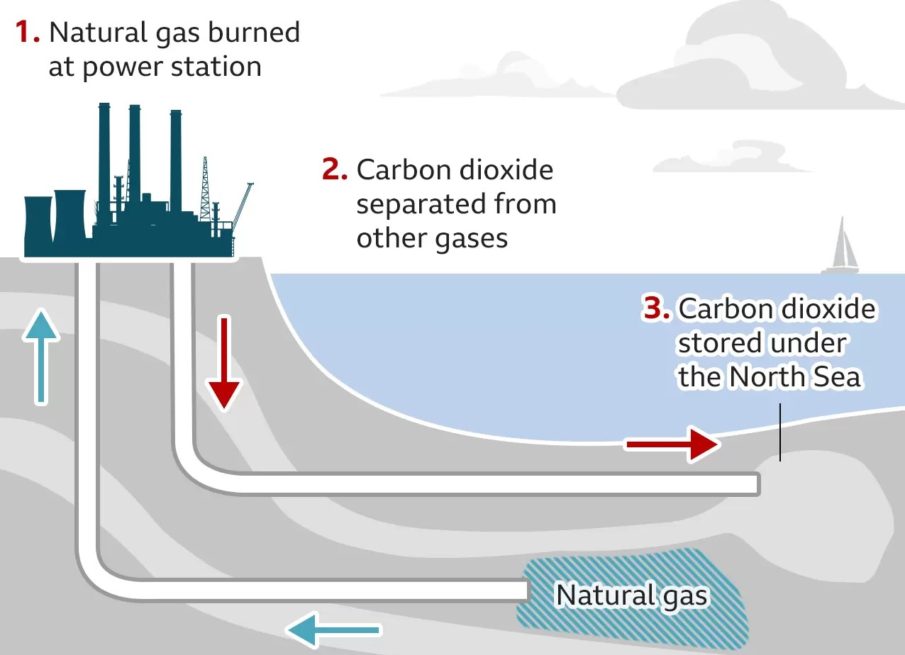

Carbon capture: What is it and how does it fight climate change?
The UK government is set to announce where a ground-breaking power station will be built.
The carbon capture plant is designed to stop most of the carbon dioxide (CO2) it produces being released into the atmosphere.
How does carbon capture work?
Burning fossil fuels like oil, gas and coal to generate electricity emits CO2, which is the main driver of climate change.
The carbon capture process stops most of the CO2 produced from being released, and either re-uses it or stores it underground.
The UK government wants a new power station where carbon dioxide is captured and stored under the North Sea - either in old oil and gas reservoirs, or permeable rocks known as saline aquifers.

Carbon capture and storage
How a year of sanctions is impacting russians
After Russia invaded Ukraine, Western nations hit Russia with massive sanctions . We talk to a resident in Moscow
about how his life has changed and WSJ’s Georgi Kantchev on how Russia has responded to the sanctions.
Further Reading:
Out of over 150,000 species assessed, 40,084 are considered threatened by extinction.
Below, you can find a table with the most endangered species, which are considered to go extinct by 2025.
Some endangered species
Animal
Lifespan
Population
Javan Rhinoceros
30-40 years
Around 60
Amur Leopard
10-15 years
Around 70
Sunda Island Tiger
15-18 years
Around 400
In addition to those great events, here are five ways you can help threatened and endangered species: